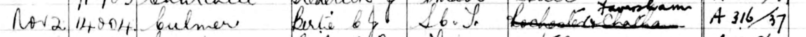

Bertie Charles J Culmer 1919 - c1999
[ Home ] | [ Calendar ] | [ Surnames Index ] | [ Census Index ] | [ Family History ]A telegraphist post office clerk and the child of Harry Culmer (a locomotive driver southern railroad) and Hannah Piles, Bertie Culmer, the third cousin once-removed on the mother's side of Nigel Horne, was born in Faversham, Kent, England on Jul 3, 19191,2,3. On Sep 29, 1939, he was living at 79 St Marys Road in Faversham1.
He died c. Feb 1999 in Canterbury, Kent, England3.
Parents
- Harry Robert was born on Jul 3, 1883
- Hannah Elizabeth Ellen was born on May 4, 1886
Citations
- 1939 Register - Findmypast (was the son of the head of the household)
- England & Wales births 1837-2006 - Findmypast
- England & Wales deaths 1837-2007 - Findmypast
Media
British Postal Service Appointment Book - 1936

England & Wales births 1837-2006 - BMD/B/1919/3/AZ/000278/024
England & Wales deaths 1837-2007 - BMD/D/1999/1/83023843
1939 Register - TNA/R39/1715/1715H/016/35
Family Tree

Generated by ged2site. Last updated on Jun 11, 2024